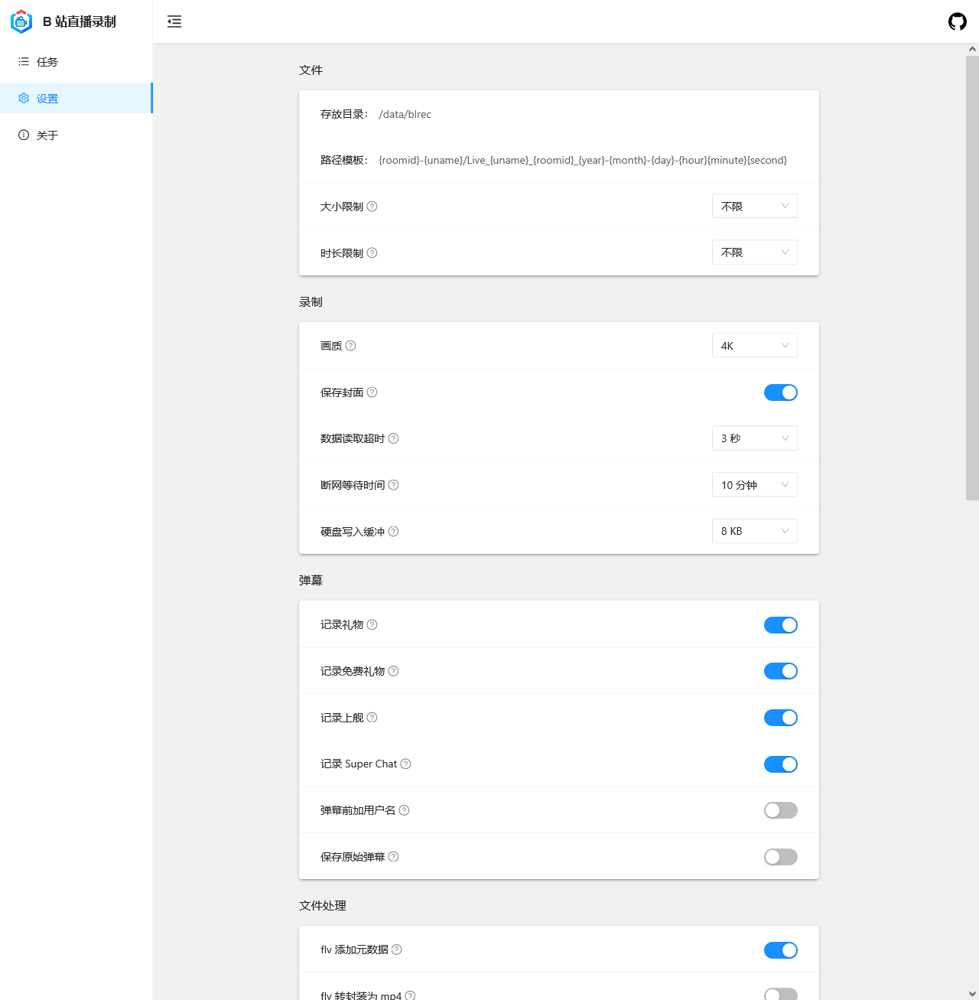
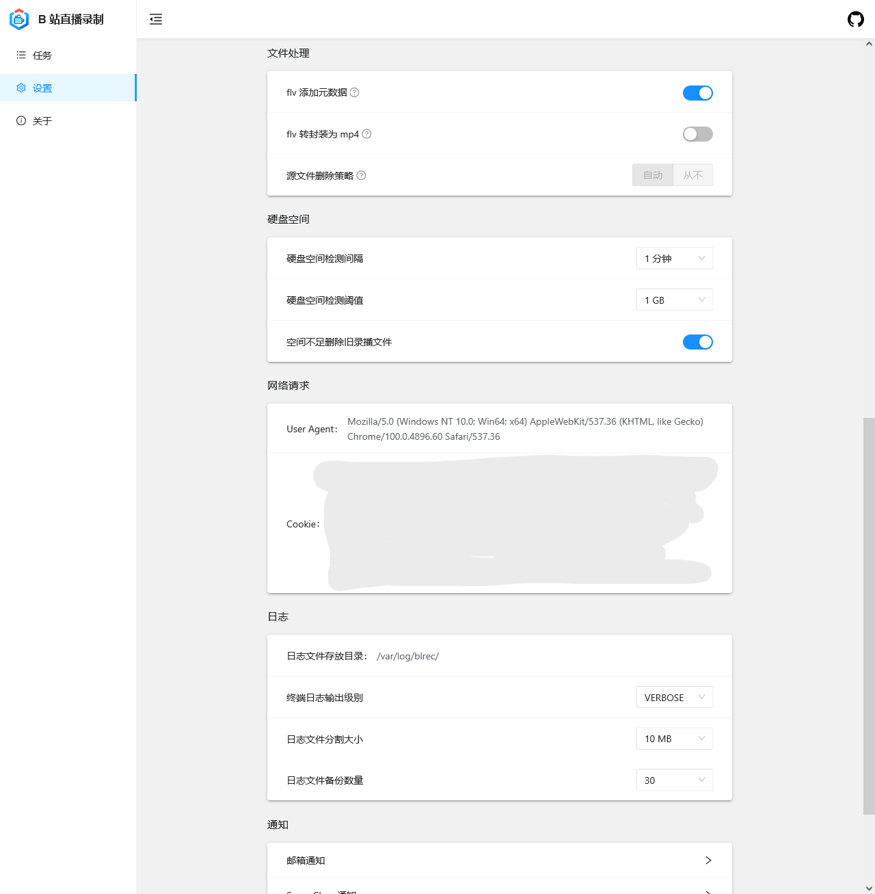
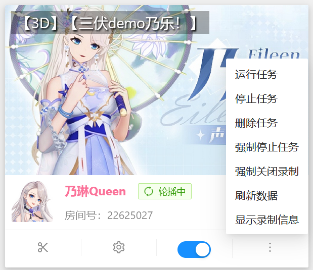
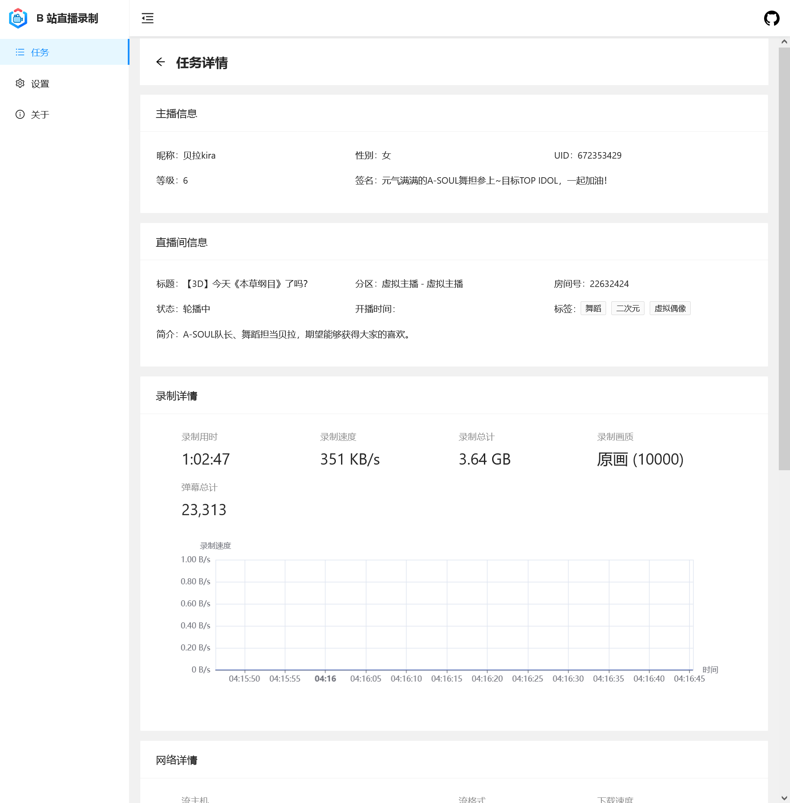
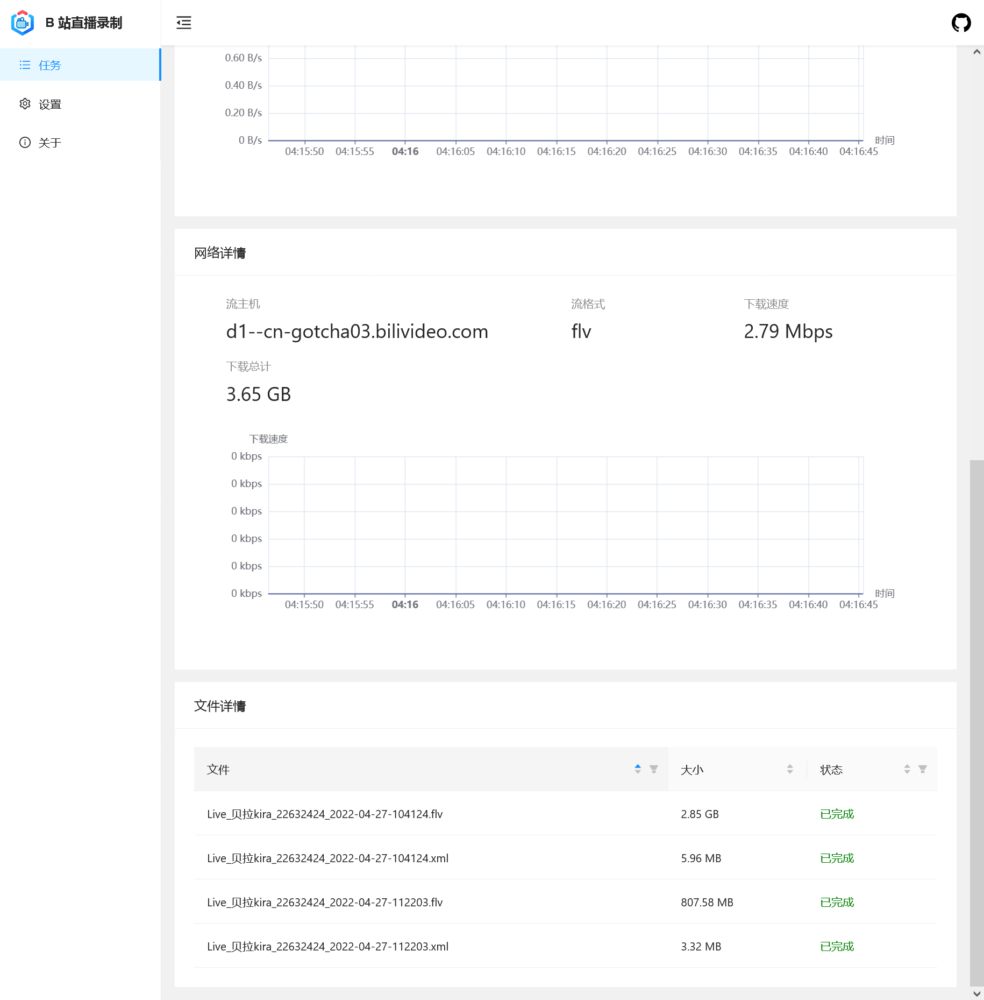

使用 acgnhiki/blrec 项目
另请注意：可能不符合您的情况😺
这里前半部分可能对你来说没有什么意义捏...
你可以用目录直接跳到需要的部分哦！
安装 blrec
一些简单的运行办法...
Docker
-
环境变量
-
默认设置文件位置:
ENV DEFAULT_SETTINGS_FILE=/cfg/settings.toml -
默认日志存放目录:
ENV DEFAULT_LOG_DIR=/log -
默认录播存放目录:
ENV DEFAULT_OUT_DIR=/rec
-
-
默认参数运行
sudo docker run -v /etc/blrec:/cfg -v /var/log/blrec:/log -v ~/blrec:/rec -dp 2233:2233 acgnhiki/blrec
- 命令行参数用法
sudo docker run \
-v /etc/blrec:/cfg -v /var/log/blrec:/log -v ~/blrec:/rec \
-dp 2233:2233 acgnhiki/blrec \
-c /cfg/another_settings.toml \
--key-file path/to/key-file \
--cert-file path/to/cert-file \
--api-key bili2233
Windows 绿色版
Windows 64 位系统用户也可以用打包好的免安装绿色版，下载后解压运行 run.bat 即可。
免安装绿色版
- 下载并解压新版本
- 确保旧版本已经关闭退出以避免之后出现端口冲突
- 把旧版本的设置文件
settings.toml复制并覆盖新版本的设置文件 - 运行新版本的
run.bat
配置 Python 环境
这段命令参考是针对 Debian/Ubuntu 及衍生发行版的。其他的发行版差异也不大。
如果您用 Windows，您可以前往官网下载安装。安装前可以勾选所有的勾——他们应该是不会伤害你的操作系统。
如果您用其他发行版，我猜您应该会装 :)
sudo apt update && apt dist-upgrade
sudo apt install python-is-python3 python3 build-essential ffmpeg
正确配置 Python 环境后，如下命令仅供参考，适合所有发行版。
如果您是 Windows，作者表明有些库需要编译，因而可能需要您安装 MS C++ 构建工具。
详请参阅：https://github.com/acgnhiki/blrec
python -m pip install -i https://pypi.tuna.tsinghua.edu.cn/simple --upgrade pip
pip config set global.index-url https://pypi.tuna.tsinghua.edu.cn/simple
pip install blrec
配置 blrec
敬请留意：存储策略
我推荐您使用 “固态转存机械” 或 “固态定期转存云端存储” 的策略，能够有效避免存储时遇到可能的不稳定与低速问题。
您可以用 rclone 对接 Google Drive 或 OneDrive for Business 来节约成本、方便分享，亦可使用各大云盘厂商提供的应用程序自带的同步功能。
同时，如果您使用个人电脑进行录播，不建议您在本地保留过多的录播数据，以免对未来使用和日常生活造成影响。
先要好好吃饭，再来好好看直播，然后才是一起录播和轻松愉快的二创。


使用 blrec
缩略图

其中：
-
剪刀按钮：从此刻截断录播，生成新的录播文件——二刀流常用
-
齿轮按钮：针对这个直播间，调整特定的录播参数——如果您运行的不是 DD 录播机，您大概也不需要调整。
-
开关：启用/停止这个直播间的录播。正在进行的任务会被结束。
-
更多：
- 刷新数据：重新获取房间状态，多用于显示错误。
- 显示录制信息：显示录播情况的图表
-
点击封面：可进入详情页，对直播录播情况进行检查。

